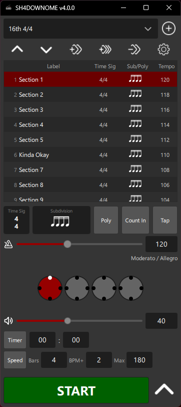
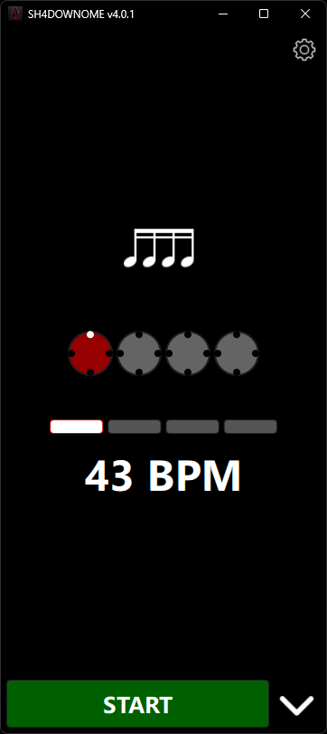
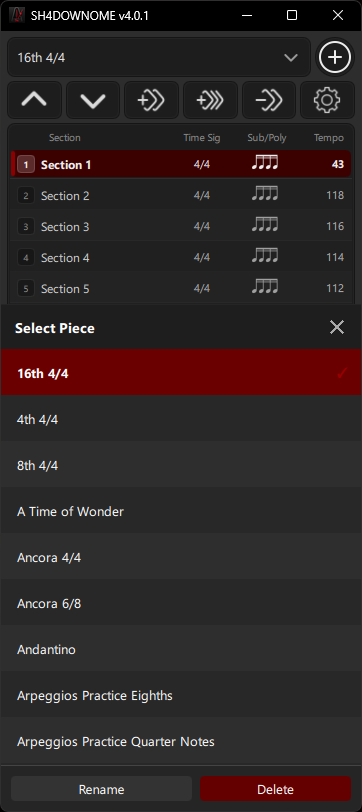
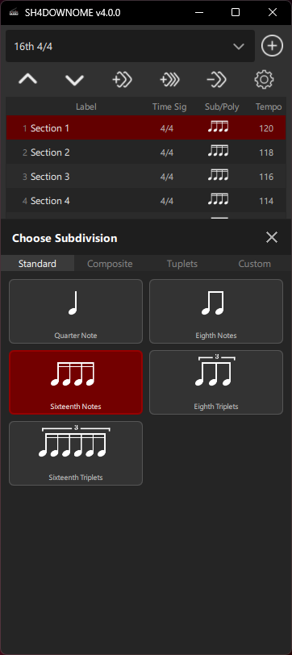
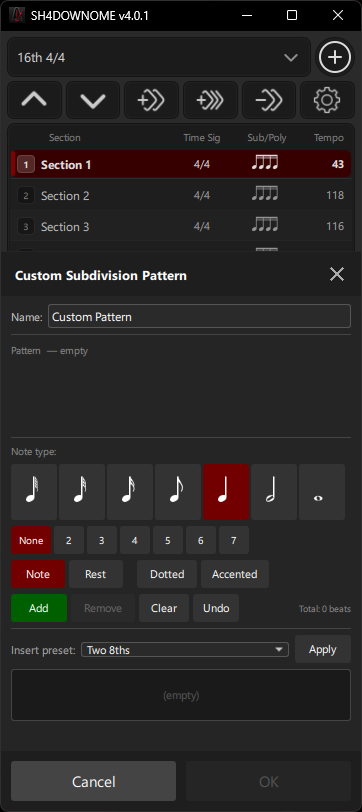
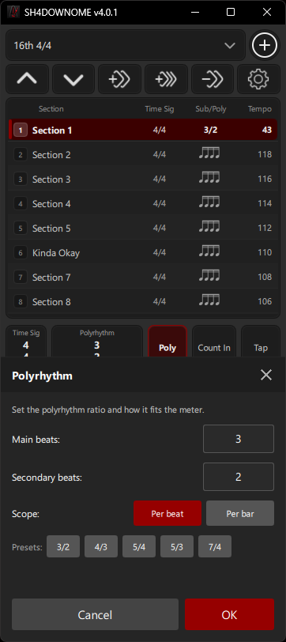
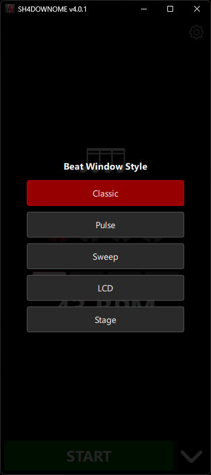
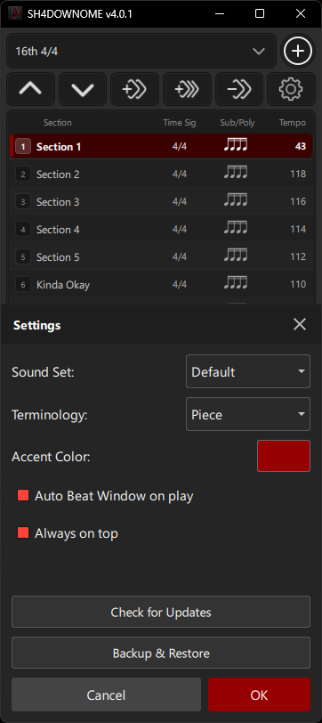

Piece-based practice
Create and manage pieces made from multiple sections, each with its own tempo, time signature, subdivision, and rhythm setup.
Windows & Android
SH4DOWNOME is built for serious practice: pieces, sections, custom subdivisions, polyrhythms, speed training, count-ins, tap tempo, and a dedicated visual Beat Window.


Features
Create and manage pieces made from multiple sections, each with its own tempo, time signature, subdivision, and rhythm setup.
Build your own subdivision patterns using notes, rests, dotted notes, accents, and custom beat groupings.
Practice ratios such as 3:2, 4:3, 5:4, 5:3, and 7:4, with per-beat or per-bar operation.
Automatically ramp tempo with configurable bars, BPM increments, maximum BPM, timer, and count-in controls.
Use a dedicated visual beat display with styles including Classic, Pulse, Sweep, LCD, and Stage.
Use the same practice workflow across Windows and Android, with a touch-friendly interface and clear visual controls.
Screenshots






Why SH4DOWNOME?
Store sections, change tempo between parts, create awkward rhythm patterns, practice polyrhythms, and keep a clean visual beat display open while you play.
Download
Windows and Android builds are distributed through the project releases page. Android APKs may show unknown-source warnings until installed from an official app store.